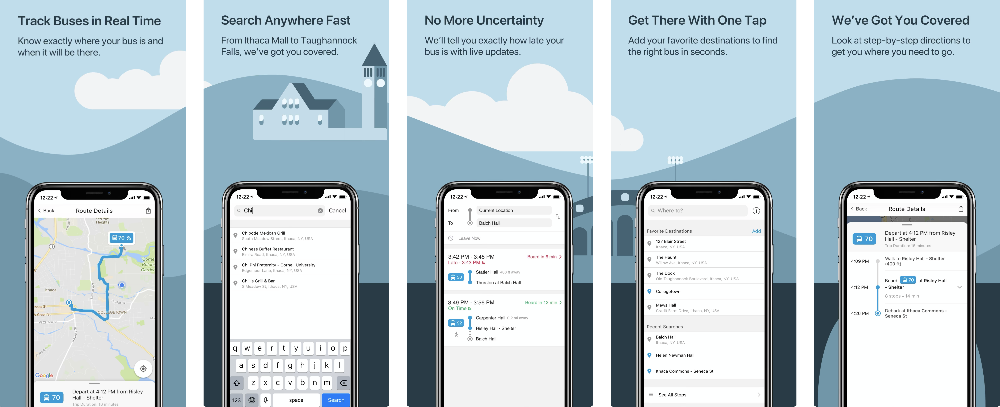
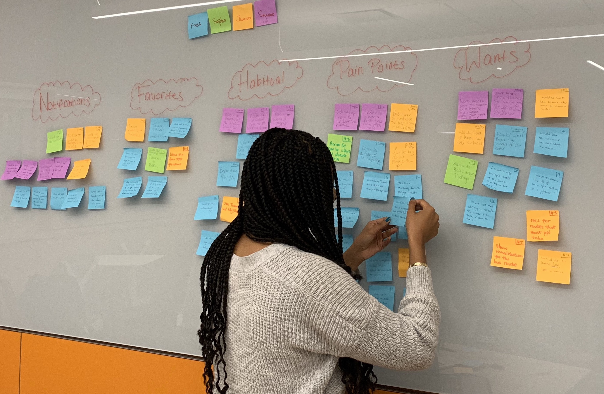
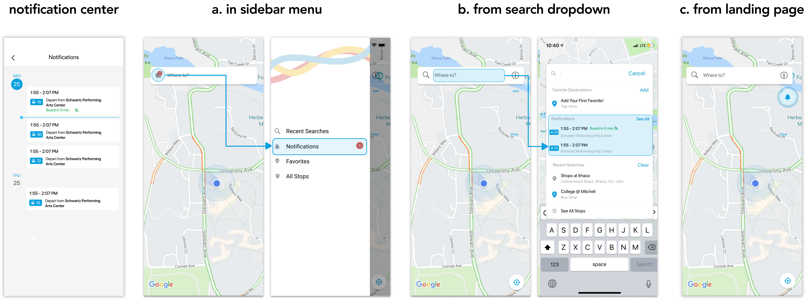
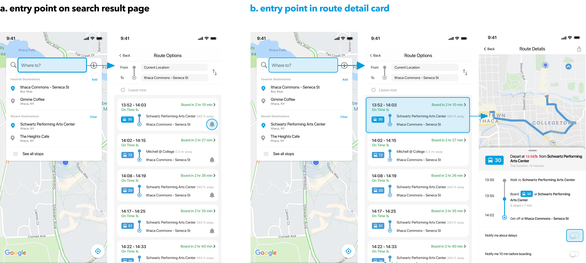
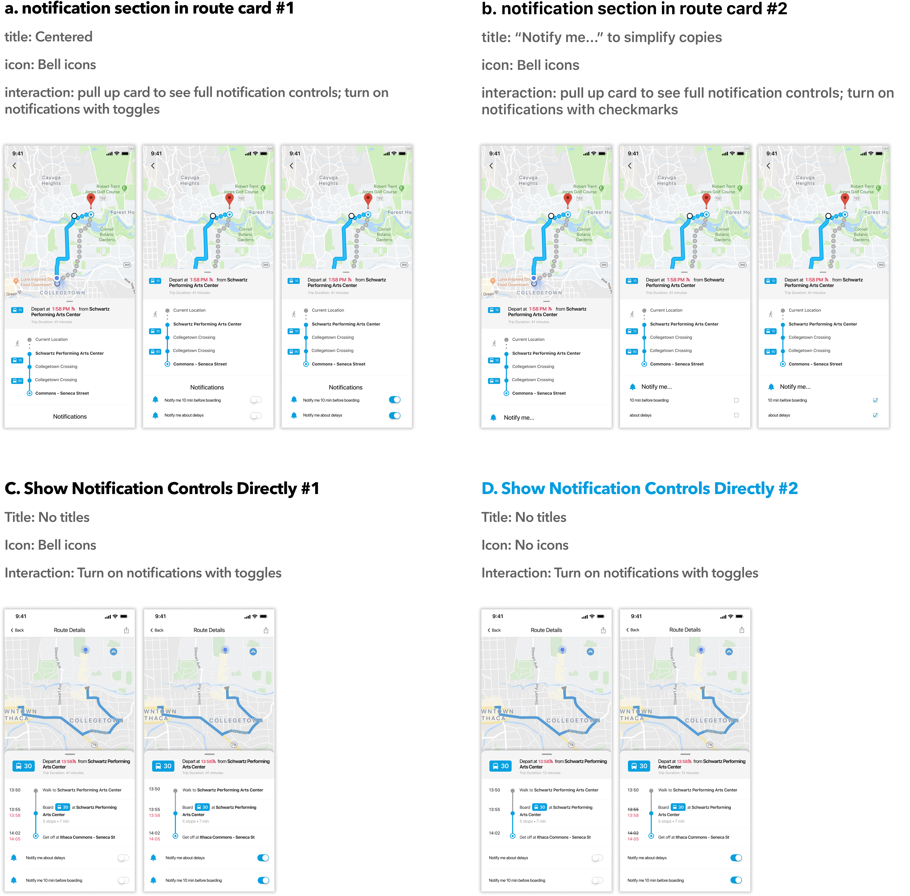
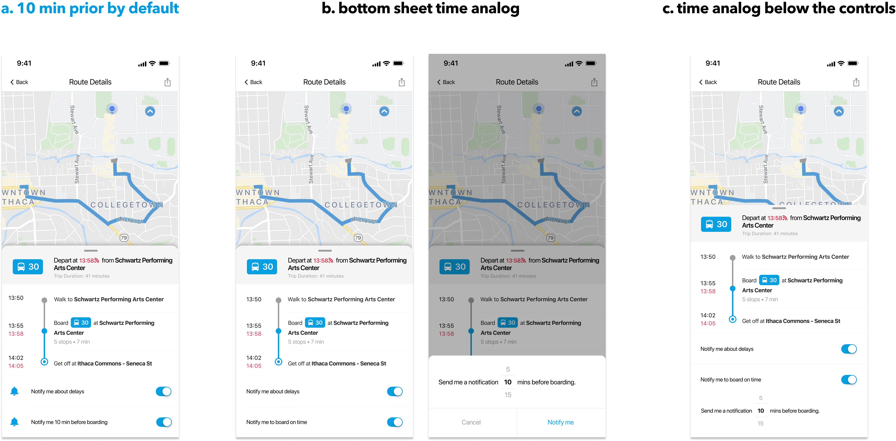
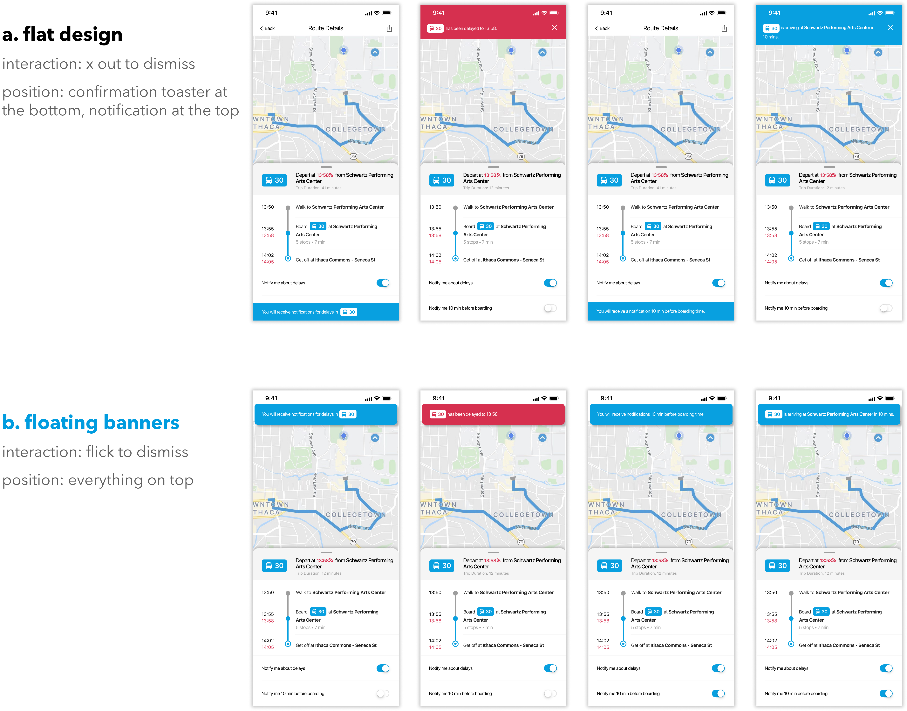
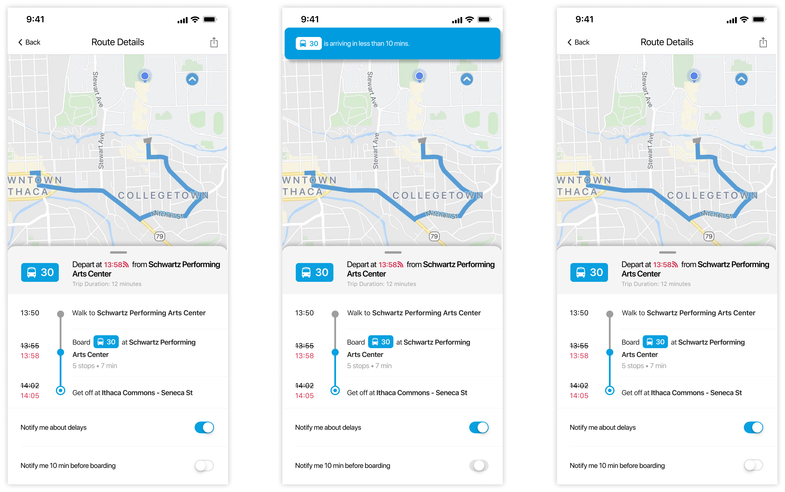

01
what is Ithaca Transit?
Ithaca Transit key features
Ithaca Transit is an iOS mobile application that provides end-to-end navigation services for the local TCAT bus system. With features like live tracking, dynamic updates, powerful search and more, Ithaca Transit helps people find the best route to their destination.
The app currently has 3,000 DAU and 8,000 MAU. Check out Ithaca Transit on the App Store to learn more.
02
how can notifications help?
The TCAT bus system is quite notorious for its unpredictablity. As Cornell undergrads, we have all experienced that 15 min wait at the bus stop during freezing cold weather, or having to walk to our 8:40AM class because we missed the bus by 30 seconds.
the problem
College students want to keep up with the TCAT bus schedules, but they cannot do that well because:
buses frequently experience unexpected delays, especially during tough Ithaca weather
they're tired of constantly needing to reconfirm bus arrival times
To help college students stay on top of their schedule (even during the heavy Ithaca snow), we designed the notification feature to provide clear, timely information about the bus routes.
Check out the prototype below, and read more to see how we arrived at this solution!
delay notifications
When looking up bus route information, users may opt in for one-time delay notifications by turning on the toggle on the bottom sheet.
A blue banner on top will confirm their subscription for delay notifications, and a magenta banner will signify in-app notification for bus delays.
boarding notifications
Users may also opt in for boarding notifications. As it typically takes some time to get prepared and walk to the bus stop, the boarding notifications will alert users 10 minutes before the bus arrival time.
see notifications on the lockscreen
Users may also see system push notifications about bus arrivals and delays when their phones are locked.
03
what kind of notifications do users need?
synthesizing user research insights with my teammate Femi
During our Fall 2019 user research study, we spoke with 12 students in total (1 newbie, 3 casual users, 8 power users; 5 first-year students, 7 upperclassmen).
These in-person interviews shed light on potential feature requirements and how we can best tailor the notification to the user needs:
Provide 2 types of notifications: boarding alerts and delay alerts. Delay notifications is a unanimous requests from almost all users. In comparison, boarding time notification requests mainly come from underclassmen, as upperclassmen demonstrate the confidence to plan in advance and catch their bus on time. Despite the conflicting needs, it is still valuable to provide boarding notifications since underclassmen students make up our main user group.
Keep the number of notifications minimal. Unnecessary notifications will cause users to turn off all notifications from Ithaca Transit, thereby defeating the purpose of this feature. In general, users think that the ideal number of notifications is 3 or fewer.
The most reasonable timing for boarding notifications is 10 min before bus arrival. Users generally take around 10 minutes to get ready and walk to the bus stops.
03
design explorations
do we need an in-app notification center?
Initially, we conceptualized having a notification center to display all of the notifications that the users have subscribed for. With the notification center calendar view, users may plan out their itinerary for the next week.
According to our user research, however, very rarely do users plan for their bus trips ahead of time. Users generally check the bus schedule 10~30 minutes prior to their intended departure time. Therefore, Notification Center would not provide much value to most users, and we discarded it in our final design.
how can users turn on notifications?
Option B —— Although it takes more clicks to reach in comparison with Option A, it has 2 clear advantages:
1) there is sufficient space to design separate controls for bus delays and bus boarding times, providing users with the freedom to only subscribe for the notifications that they need;
2) it is very clear about exactly which route and what kind of notification you have turned on.
Option D —— As it does not have section titles, Option Dsimply provides separate controls for boarding notifications and delay notification. Additionally, Option D appears most consistent with the overall visual design and the mental model for turning on notifications.
do users need to customize boarding time notifications?
Option A —— An important question for boarding time notifications is when to send them. We initially explored Option B & C, which provides a time analog wheel that allow users to manually customize the alert time. However, this slows down the interaction, and users find it inconvenient to customize the timing every time they turn on the notification.
Therefore, we decided to set a default notification sending time for users, and 10 minutes prior appears to be the most reasonable timing according to our user research findings.
visual design exploration
As explained above, Notification Center does not tailor to the common use case and fails to bring value to most users. Therefore, we will provide one-time notifications that users may dismiss after viewing within the app. We will also briefly display a feedback messages when users turn on the notification.
Option B —— In comparison to the flat visual design of Option A, Option B stands out as more visually unique and fits better with the floating style of the route detail card at the bottom.
edge case
Users might attempt to turn on boarding notifications without realizing that the bus is in fact arriving in less than 10 minutes. In this case, we will not allow users to successfully turn on the boarding notifications and instead send a feedback message to users, saying that the bus is arriving within 10 minutes.
